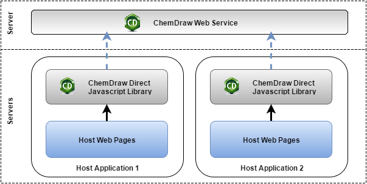

The JavaScript library can be included in any web-based applications. The host application developers have to make sure the scripts and resource files are deployed correctly with the host application. Each host application needs to maintain one copy of the library. An upgrade on the JavaScript library may cause an upgrade of the entire host application.
If the ChemDraw Web Service is needed, a separate web service has to be deployed in the network. The address of the web service has to be configured manually in the JavaScript library. The web service can be installed on the same server which has the host application running.
